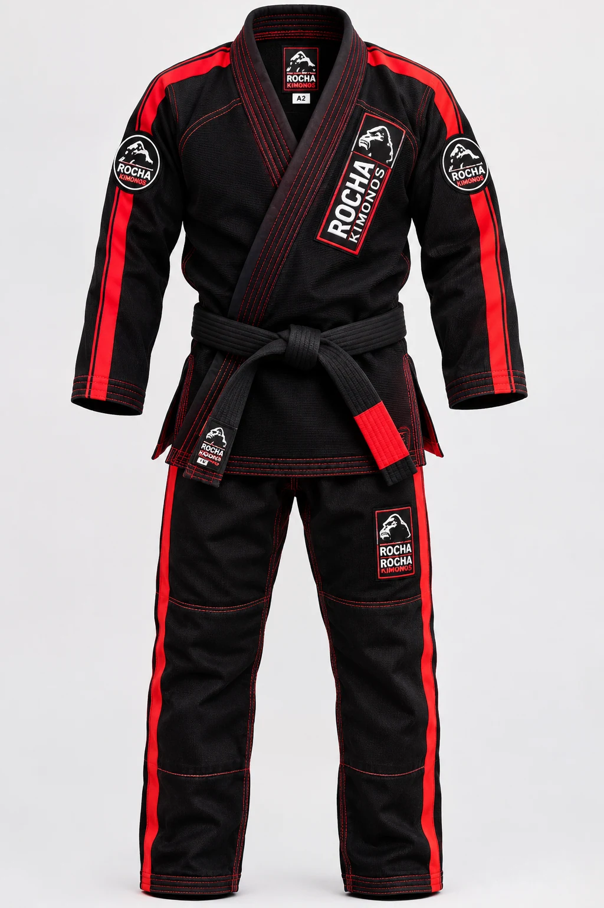
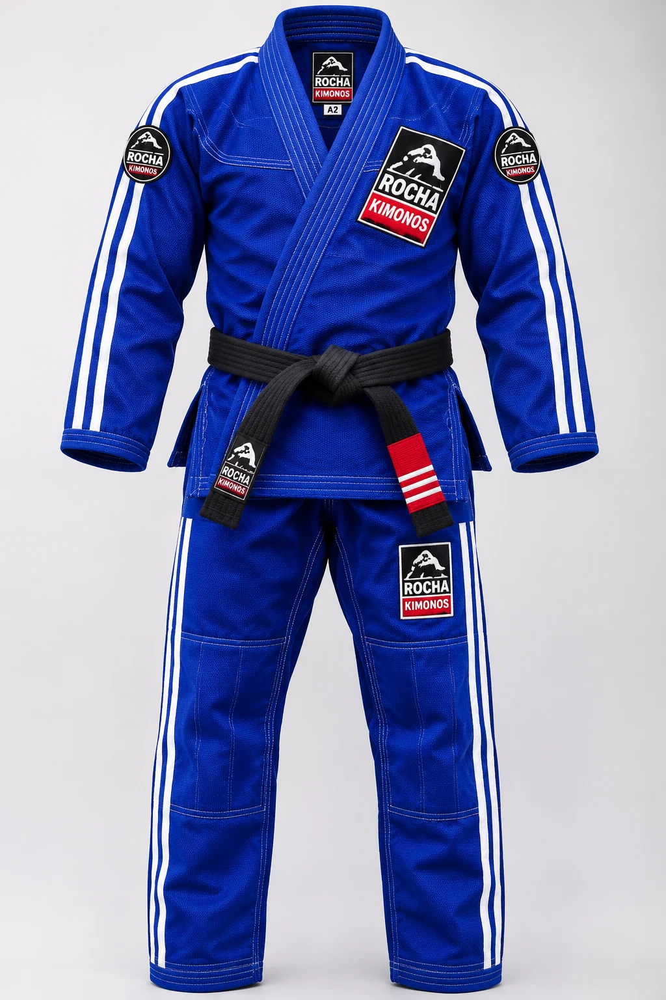
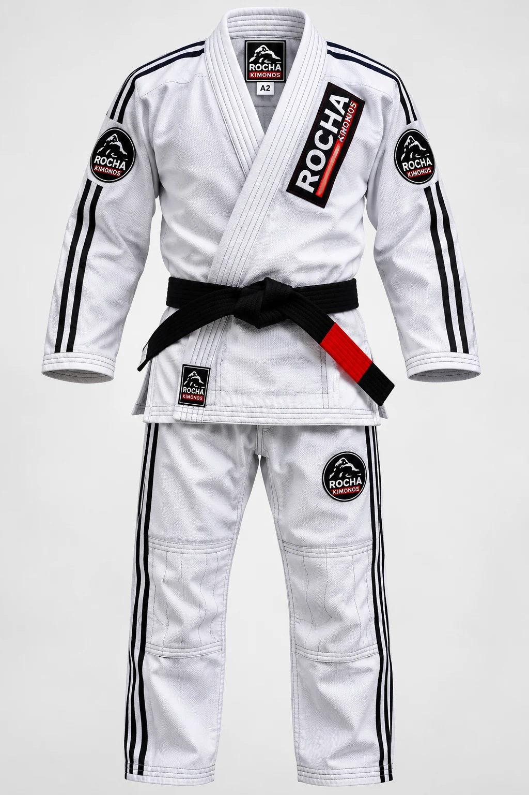
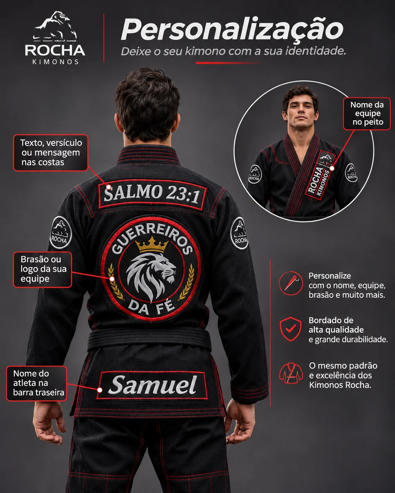
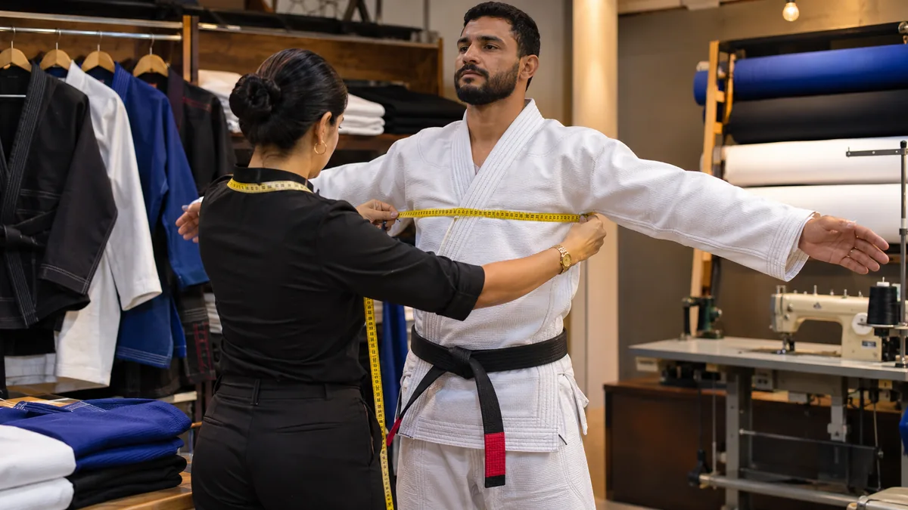
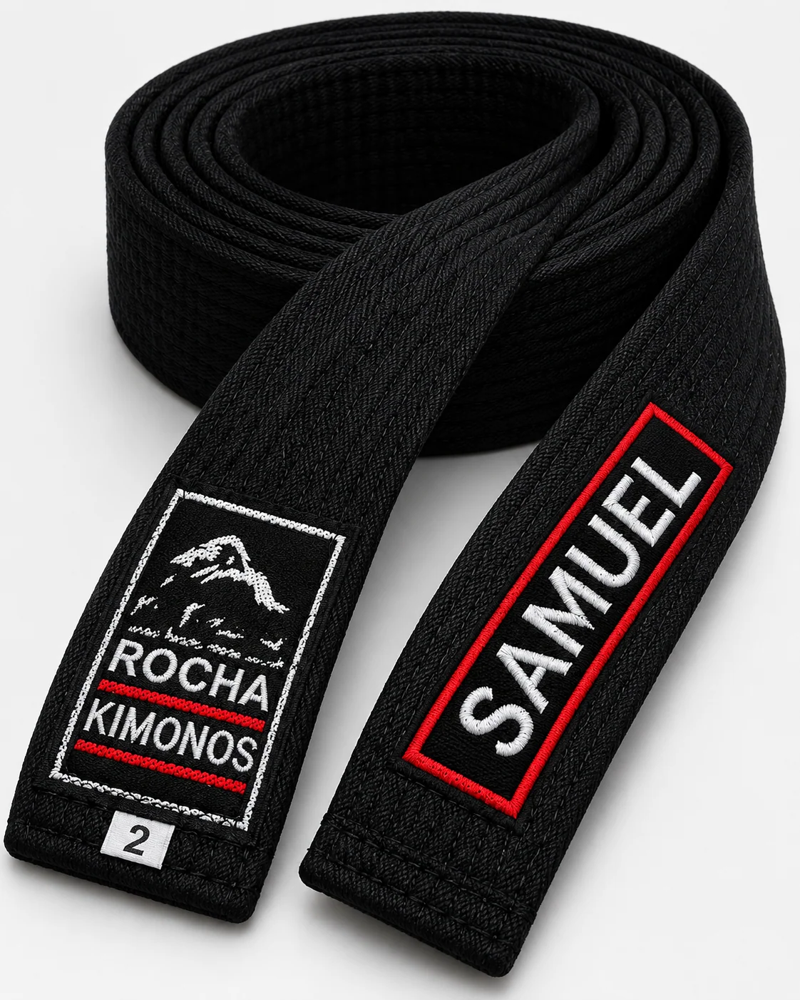

TECIDO ENCORPADO
Material mais grosso, pensado para resistência e presença no tatame.
Kimonos de jiu-jitsu com tecido encorpado, costuras e bordados personalizados e confecção sob medida. Um uniforme que valoriza a identidade da sua academia e da sua equipe.
Tecido encorpado, acabamento cuidadoso e liberdade para personalizar. Uma proposta para atletas que procuram algo além do modelo de prateleira.
Material mais grosso, pensado para resistência e presença no tatame.
Cor do kimono, cor das costuras, nomes, equipes e bordados.
Atendimento presencial para tirar suas medidas e confeccionar o caimento.
Qualidade e personalização com orçamento direto com a fábrica.
O seu kimono começa na escolha da cor. Os detalhes, as costuras e os bordados podem tornar cada peça única.

EXEMPLO DE PERSONALIZAÇÃOContraste marcante, identidade forte.

EXEMPLO DE PERSONALIZAÇÃOTradição com acabamento de destaque.

EXEMPLO DE PERSONALIZAÇÃOClássico, limpo, feito para se destacar.
Desenvolvemos seu kimono sob medida, com opções de cores, costuras e bordados definidas conforme o seu projeto. Consulte a disponibilidade.
CONSULTAR PERSONALIZAÇÃO ↗* Imagens ilustrativas dos modelos e das combinações de costuras, não fotografias de produtos específicos da fábrica. Consulte as opções disponíveis.
Personalize as cores, as costuras e o bordado do seu kimono. Indique também onde quer aplicar o nome do atleta, o escudo da equipe e, se desejar, um versículo ou mensagem.
Sua seleção: kimono preto com costura vermelha.
ENVIAR PREFERÊNCIAS PELO WHATSAPP ↗Escolhas informativas. O desenho final, a posição dos bordados, as medidas, a disponibilidade e o valor são confirmados pela fábrica antes da produção.


Na Rocha Kimonos, você pode agendar uma visita para que suas medidas sejam tiradas pessoalmente. O kimono é confeccionado considerando seu corpo, para um caimento mais adequado ao seu treino.
Faixas com a etiqueta oficial ROCHA KIMONOS. E, conforme seu pedido, bordamos nome, equipe e graduação: cada detalhe com a sua identidade.

MARCA DO FABRICANTE: a etiqueta com o gorila e ROCHA KIMONOS é a identidade original da faixa. Nome do atleta, equipe e graus são bordados adicionais, conforme o pedido.
Você tem academia, equipe ou revende artigos esportivos? Consulte condições especiais para compras em quantidade, com identidade visual e bordados para sua equipe.
O preço depende das escolhas, da personalização e do pedido. Fale diretamente com a fábrica para montar sua proposta.
Sim. Além das opções de cor do kimono, você pode consultar as combinações de costura disponíveis para criar um acabamento especial.
Sim. A Rocha Kimonos trabalha com bordados de nomes, equipes e identificação personalizada, conforme o projeto combinado.
É possível combinar uma visita presencial para tirar suas medidas. Entre em contato para verificar o atendimento e agendar.
Sim. Academias, equipes e revendedores podem solicitar condições especiais, conforme a quantidade e a personalização.
Converse com a Rocha Kimonos, descreva suas preferências e peça um orçamento sem compromisso.
Preços e detalhes informados no atendimento.